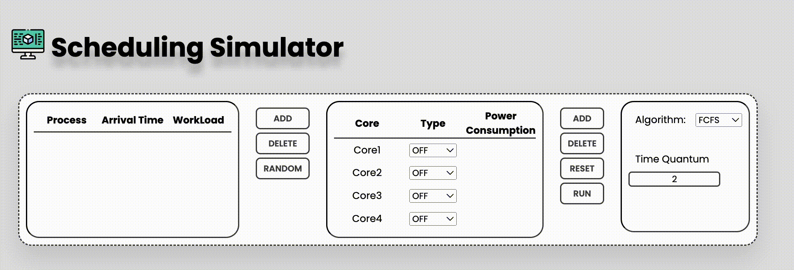

1. Input Scheduling Data
> 프로세스 정보 (도착시간, WorkLoad), 코어 종류, 스케줄링 알고리즘 (RR이면, Time-Quantum도 입력!)을 입력한다.
> 프로세스의 개수는 99개, 코어의 개수는 15개까지 선택 가능하다.
> 프로세스 입력이 귀찮으면 Random 버튼을 누른 후, 프로세스의 개수, 도착시간과 WorkLoad의 범위를 누르고 OK!
2. Output
> 코어가 현재 작업중인 프로세스의 색상을 확인할 수 있다.
> Power Consumption은 코어의 현재 전력소모량을 의미한다.
> Total Power Consumption은 전체 코어의 현재 전력소모량을 의미한다.
> Ready Queue와 스케줄링 과정은 간트차트로 확인할 수 있다.
> 스케줄링 결과를 Scheduling Result에서 확인할 수 있고, 결과의 합계, NTT의 평균도 확인할 수 있다.